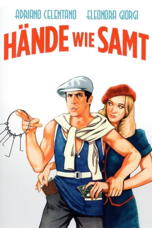
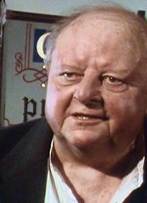

#7838 Liebe macht Diebe
Alternativ: Hände wie Samt - Der Millionenfinger (Englischer Titel)
 
 IMDB-Wertung: 6.4 / 10
IMDB-Wertung: 6.4 / 10  Metascore: 0
Metascore: 0 
Ein erfolgreicher Erfinder, dessen Panzerglas eine ganze Zunft von Einbrechern brotlos macht, gerät als Opfer einer vermeintlichen Entführung in den Kreis gerader jener kleinen Ganoven, bei denen er am unbeliebtesten ist. Zudem ist er wieder mal auf Freiersfüßen und verliebt sich ausgerechnet in eine Frau, die früher auf Schaufenstereinbrüche spezialisiert war und ihren Arbeitsbereich nun in die U-Bahn verlegt hat.
Jahr: 1979
Dauer: 100 Minuten
FSK: 6
Land: Italien Studio: Jugendfilm-VerleihTonspuren:
Untertitel: Deutsch,
Auflösung: 1080p (1920x1040) Größe: 6707 MB
Genre: Komödie, Liebe
Regisseur: Franco Castellano, Giuseppe Moccia
Drehbuch: Franco Castellano
Soundtrack: Nando De Luca
Darsteller:
 Adriano Celentano als Guido Quiller
Adriano Celentano als Guido Quiller- Eleonora Giorgi als Tilli
-  John Sharp als Benny
- Ania Pieroni als Maggie
- Giacomo Rossi Stuart als Aufsichtsrat bei Suisse Assurance (uncredited)
- Olga Karlatos als Petula Quiller
- Gino Santercole als Leo Di Giordano
- Memo Dittongo als Momo
- Giancarlo Tondinelli als
- Pippo Santonastaso als Inspector
- Gianni Zullo als Il nonno
- Geoffrey Copleston als
- Walter Valdi als
- Sandro Ghiani als
- Pietro Tordi als
- Sergio Tardioli als
- Dino Cassio als
- Alfio Patané als Uomo derubato in metropolitana (uncredited)
Datei: X:\1979\Liebe macht Diebe (1979, FSK6, 1920x1040).mkv seit 20.12.2017
Festplatte: HD 1971-1979
 Es gibt insgesamt 29 Filme in der Gruppe '1979'
Es gibt insgesamt 29 Filme in der Gruppe '1979'